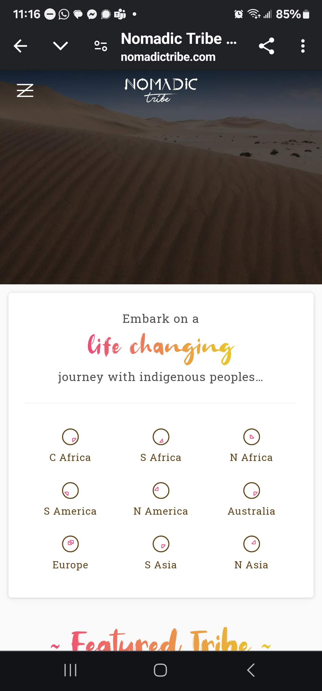

<!DOCTYPE html>
<html lang="en-US"></html>
<head>
    <meta charset="UTF-8">
    <meta name="viewport" content="width=device-width,initial-scale=1.0">
    <title> WDD230 Course Home</title>
    <meta name="description" content="WDD 230 - Web Frontend Development. Yvette Johnson's course assignment portal.">
    <meta name="author" content="Yvette Johnson">
    <link rel="stylesheet" href="styles/normalize.css">
    <link rel="stylesheet" href="styles/base.css">
    <link rel="stylesheet" href="styles/larger.css">
    
</head>

<body>
    <header>
        <h1>Design Principles</h1>
    </header>
       
    
    
       <section class="card 1">
            <h2>Hicks Law</h2>
            <a class="site" href="https://nomadictribe.com/">Nomadic</a>
            <br>
            
        <p>This website connects visitors with a lot of opportunities to choose from. As well as locations to visit different indigenous tribes around the world.  The opening page displays a stunning video of a man walking across a dessert.  If you an one who loves a great adventure, this is the place for you!</p>
           
        </section>

        <section class="card 2">
            <h2>Visual Heirachy</h2>
            <a class="site" href="https://www.franshalsmuseum.nl/en/">FH Museum</a>
            
        <p>It is a challenge for this museum to show all of the artwork that is has on one website, however with this being said it is a great museum for visitors as they will understand what they see depending on whey they visit, as well as a taste of what this museum has in store for the future months.  It shows there are two museums in one location, the art that is currently displayed as well as at the  bottom where the two locations are located.</p>    
        </section>

        <section class="card 3">
            <h2>White Space and Clean Design</h2>
            <a class="site" href="https://spotify.design/">spotify</a>
            
            <p>This website makes great use of their space as it is filled with seamless animations, drop shadows, and abstract elements that make images appear 3D.  This location serves as a hub for all things visual and creative.  Music and podcasts gives listeners a look into who, what, why, and how of what makes the app so sensational.  It is well laid out with a lot of space between things making it very clear what it has to offer.</p>
        </section>

   
    <footer>
        <p>&copy; <span id="currentYear"></span> Yvette Johnson, United States</p>
        
        <p id="mod">lastModified</p>
    </footer>
   <!-- JavaScript -->
   <script src="scripts/getdates.js" defer></script>
   
   
 </body>
</html>